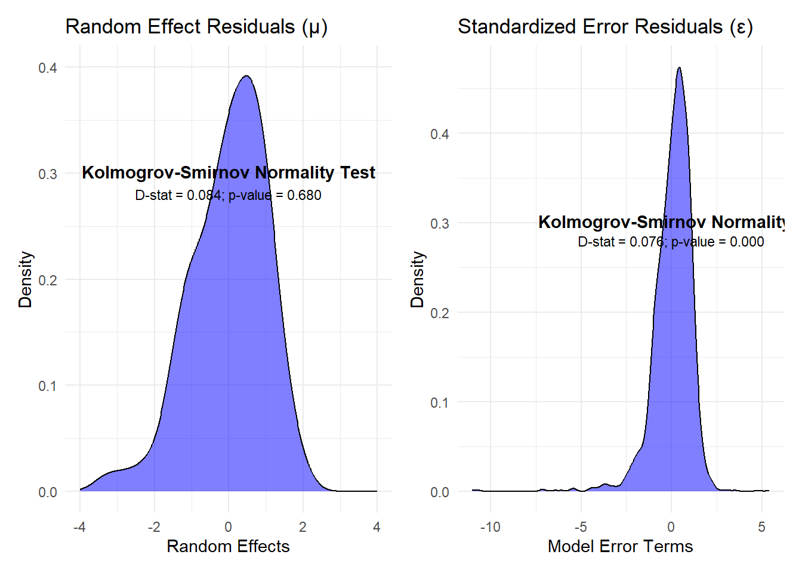

In this section, we will present an implementation of the Empirical Best Prediction (EBP) unit modelling approach in R based on World Bank’s Small Area Estimation Guidelines, (Corral et al. 2022), as well as (Molina and Rao 2010) and (Rao and Molina 2015). Similar to the disclaimer made in the previous section, this practical manual does not present a theoretical statistical primer on unit level poverty mapping. Rather, it presents a combination of practical and simple R scripts with appropriate explanations to expose the simplicity of performing these tasks in R to the user. The studies previously cited are excellent starting points for those interested in understanding the theoretical underpinnings for the code being presented here.
This chapter is subdivided as follows to show the whole game of the EBP linear mixed effect modelling approach:
The Data: In this subsection, we present a brief checklist of data items needed for the unit level poverty mapping as well as present the specific data to be used in this chapter.
Data Preparation: Here we present the process of transforming the data in
into what is needed for variable selection and then estimating a unit level poverty map
Variable Selection: We present the LASSO methodology of the GLMNET, glmmLasso and hdm R packages as well as another implementation that uses the stepwise model
EBP Unit Level Model Estimation: Having selected the set of variables, we proceed to use the povmap package’s povmap::ebp() function to estimate the poverty map.
Post Estimation Diagnostics: We proceed to test model assumptions of the EBP linear mixed effects model and present functions within the povmap package for producing report ready figure and tables.
3.2 The Data
The main idea of SAE is to combine multiple data sources. Typically, there is a survey data set and a census or administrative/register dataset both at an individual and/or household unit level. The target variable (typically household welfare/income for poverty mapping) is available in the survey but not in the census data. The goal of the exercise is to estimate welfare/income for each unit within the census or administrative register dataset by developing a model of welfare or income within the survey. It is important that the outcome variable has the same definition within the census or administrative dataset as the case maybe. It would be inappropriate to estimate household welfare/income within the survey and use the same model to predict income at the individual level of the census. Below is a brief checklist of data requirements needed for unit level poverty mapping with the povmap R package:
A unit level survey data.frame object with individual and household characteristics including the target area variable, outcome variable (welfare aggregates, income per capita etc)
A unit census/administrative register dataframe object with individual and household characteristics including the target area variable. The outcome variable is typically missing since the topic of this tutorial is estimating it.
For the purposes of this tutorial, we will use the European Union Statistics on Income and Living Conditions (EU-SILC) in Austria from 2006. Please see (Kreutzmann et al. 2019) for the full description of the dataset
### load the datasurvey_dt <- eusilcA_smp |>as_tibble()## ignore the eqIncome variable that has been left in the eusilcA_pop datasetcensus_dt <- eusilcA_pop |>as_tibble()#### the survey datasetglimpse(survey_dt)
All target areas within the survey must be present within the census.
The emdi::ebp() and povmap::ebp() function calls will result in an error message if values in the target area variable are missing within the survey, this includes NA values within the survey target area column that are not in the census’ target area column.
### counting the number of districts (i.e. target areas) ### within the survey that are not a subset of the census districts. ### When 0 is returned below: there are no areas as suchsurvey_dt |>anti_join(census_dt, join_by(district)) |>nrow()
[1] 0
Other important data for poverty mapping include:
A shapefile of the sub-national boundaries.
While a table of poverty rates would suffice, a picture is worth more than a 1000 words and as such emdi and povmap have functionality for converting the resulting estimates into a map using the plot() function within the emdi and povmap packages. It is essential that the target area variable in the census and survey (which by now should be consistent between the survey and census) should also match with the target area variable within the shapefile in order to use the plot() function within emdi or povmap.
Once the following steps have been taken, the next stage is to prepare the set of variables for estimating a model of household welfare and predicting the consumption aggregates into the census.
3.3 Data Preparation for unit level model
In this section, we describe a few common techniques for creating variables with strong correlations to the outcome variable. This includes creating:
variable interactions
target area average variables
dummy variables (at the lowest level of national representation, regional dummies, as well as other dummy variables to capture some non-linear relationships between the certain variables and the outcome variable)
First a little bit of housekeeping is in order:
### subset the set of candidate variables into a character vectorcandidate_vars <- survey_dt |> dplyr::select(-any_of(c("eqIncome", "weight", "state", "district"))) |>names()### we have to ensure candidate variables are numbers:### (numeric or integer class)### the only variable that does not meet this criteria is the ### gender variablesurvey_dt <- survey_dt |>mutate(gender =ifelse(gender =="female", 1, 0))census_dt <- census_dt |>mutate(gender =ifelse(gender =="female", 1, 0))
3.3.1 Creating Variable Interactions
The create_interactions() function employed in the subsequent code block interacts a specified variable interacter_var with a list of variables of interest var_list. This should be applied to both census and survey data to ensure the same variables are created in both instances.
### show the function we have used to automate interactions between variables#' A function to interact a variables with a set of variables#' #' @param dt a data.frame#' @param interacter_var the variable to be interacted#' @param var_list the set of variables to interact with#' #' @export#' create_interactions <-function(dt, interacter_var, var_list) {# Ensure dt is a data.tableif (!"data.frame"%in%class(dt)) { dt <-as.data.table(dt) }# Check if interacter_var exists in the datasetif (!(interacter_var %in%names(dt))) {stop(paste(interacter_var, "not found in dataset")) }# Check if var_list contains valid variables that exist in the datasetif (any(!var_list %in%names(dt))) {stop("Some variables in var_list are not found in the dataset.") }# Create an empty data.table to store interactions int_dt <-data.frame(matrix(nrow =nrow(dt)))# Loop over var_list to create interaction termsfor (var in var_list) { interaction_name <-paste0(var, "_X_", interacter_var) int_dt[[interaction_name]] <- dt[[var]] * dt[[interacter_var]] } int_dt <- int_dt[, -1]return(int_dt)}
3.3.2 Computing target area averages and regional dummies
It is often useful to compute target area averages to improve the explanation of intra-area variation in the dependent variable. Below is some efficient code that employs the power of the data.table package to compute the averages and simultaneously include them within the census and survey datasets.
In addition, creating dummy variables for the lowest resolution administrative division which is also national representative may help control for some unobserved regional heterogeneity, improving model fit and prediction accuracy, capture spatial dependence in welfare patterns. In rear cases, it should be noted that dummy variables with too few observations in any class might introduce high multicollinearity
In rear cases, it should be noted that dummy variables with too few observations in any class might introduce high multicollinearity or reduce the degrees of freedom.
3.3.3 Final Preparations for Variable Selection
Certain diagnostics checks ought to be performed before the variable selection process is implemented. First, we check the distribution of the non-transformed outcome variable. In the case of income or household consumption, it is typically expected and preferred that the income/household consumption variable can be transformed into a normally distributed random variable. We apply the log and boxcox transformations as seen in the code below:
#### let's create the set of outcome variables for the different potential#### income transformations we might be interested in doing###### log transformationsurvey_dt <- survey_dt |>mutate(logeqIncome =log(eqIncome))###### boxcox transformation#### apply box-cox transformationboxcox_result <- MASS::boxcox(lm(eqIncome ~1, data = survey_dt), lambda =seq(-2, 2, by =0.1))lambda_opt <- boxcox_result$x[which.max(boxcox_result$y)]cat("Optimal Lambda:", lambda_opt, "\n")
Several other transformations are also possible including the ordernorm transformation. See bestNormalize::orderNorm() documentation for more details.
Next, we ensure the candidate variables in the survey and census come from similar distributions. One assumption of the linear mixed effects approach is that the variables selected are drawn from the same distribution.
In the following chunk, we apply the povmap::ebp_test_means() function to present a table of means for each survey and census and show the results of the standard z-tests. It is common to drop values that reject the null hypothesis (at the 95% level) that the survey variable (for any given variable) has a different mean from the same variable in the census.
However, the ebp_test_means function doesn’t control for the fact that the variables are national representative at the state level. We implement another variant to the ebp_test_means that will allow users to cluster the standard errors at the state level.
#' Perform test for difference between survey and census means #' #' This function computes weighted means of the same set of variables within the census and survey controlling for a cluster level. A test for #' difference of the means are performed for each variable with two-tailed p-values returned and the cluster level has to be specified for the#' estimation of variance#' #' @param varlist character vector, the set of variables of interest#' @param smp_data the survey data#' @param pop_data the population data#' @param weights a character string containing the name of a variable that indicates weights in the sample data. If a character string is #' provided a weighted version of the ebp will be used.#' @param pop_weights a character string containing the name of a variable that indicates population weights in the population data. If a #' If a character string is provided weighted indicators are estimated using population weights. The variable has to be numeric. #' Defaults to NULL. #' #' @import surveyebp_test_means_clustered <-function(varlist, smp_data, pop_data, cluster, weights =NULL, pop_weights =NULL) {if (is.null(weights)) { smp_data$weights <-rep(1, nrow(smp_data)) weights <-"weights" }if (is.null(pop_weights)) { pop_data$pop_weights <-rep(1, nrow(pop_data)) pop_weights <-"pop_weights" } else { pop_data$pop_weights <- pop_data[[pop_weights]] } smp_df <- smp_data[complete.cases(smp_data[, c(varlist, weights, cluster)]), c(varlist, weights, cluster)] pop_df <- pop_data[complete.cases(pop_data[, c(varlist, "pop_weights", cluster)]), c(varlist, "pop_weights", cluster)] smp_df <- smp_df |>mutate(across(all_of(varlist), as.numeric)) pop_df <- pop_df |>mutate(across(all_of(varlist), as.numeric))# Define survey design with clustering smp_design <-svydesign(id =~get(cluster), weights =~get(weights), data = smp_df) pop_design <-svydesign(id =~get(cluster), weights =~pop_weights, data = pop_df) smp_means_df <-data.frame(smp_means =sapply(varlist, function(var) svymean(as.formula(paste("~", var)), smp_design)[1]),smp_se =sapply(varlist, function(var) SE(svymean(as.formula(paste("~", var)), smp_design))),variable = varlist ) pop_means_df <-data.frame(pop_means =sapply(varlist, function(var) svymean(as.formula(paste("~", var)), pop_design)[1]),pop_se =sapply(varlist, function(var) SE(svymean(as.formula(paste("~", var)), pop_design))),variable = varlist ) means_df <-merge(smp_means_df, pop_means_df, by ="variable") means_df$diff <- means_df$pop_means - means_df$smp_means means_df$diff_se <-sqrt(means_df$smp_se^2+ means_df$pop_se^2) means_df$zscore <- means_df$diff / means_df$diff_se means_df$pvalue <-2* (1-pnorm(abs(means_df$zscore)))return(means_df[, c("variable", "smp_means", "pop_means", "diff", "pvalue")])}
In the next section, we fold the final checks into the variable selection process. We drop variables that are highly correlated and set a sparsity threshold. The sparsity threshold ensures that variables that do not have a certain proportion of non-missing observations are dropped. We have folded both these checks into the glmnetlasso_vselect() function.
3.4 The Variable Selection Process
The glmnetlasso_vselect() function takes the dependent variable (welfare or income variable) as well as the set of potential candidate variables which just created and applies the lasso methodology (run here(glmnet::glmnet) for more details). This includes the option to perform a reproducible n-fold cross validation to reduce the risk of overfitting the model. In this instance, we have run applied this function to select the best predictors of household welfare based on the 3 welfare transformations i.e. 3 separate runs of the function, one for each transformation. See below:
#' A function for variable selection using the GLMNET R package#' #' This function acts as a wrapper to the GLMNET R package which performs variable selection with nfold cross validation. #' #' @details This function cleans the data `dt` first by standardizing the predictors, dropping columns with missing values, very low variance (near#' zero variance), highly correlated variables based on a certain `correlation_threshold`. The function also drops variables with an high percentage #' of zeros based on a `sparsity_threshold`. It then fits the lasso regression with the GLMNET package before returning the best combination of#' predictive variables based on the `lambda_type` selection criteria. #' #' #' @param dt data.frame or data.table#' @param candidate_vars character, the set of potential predictors within `dt`#' @param y character, the variable name of the outcome variable within `dt`#' @param weights character, weight variable name#' @param alpha integer, 1 for LASSO and 0 for ridge regression#' @param nfolds integer, the number of cross fold validations to perform#' @param seed integer, randomization seed #' @param lambda_type, either "lambda.min" or "lambda.1se". see `glmnet::glmnet()` for more information#' @param correlation_threshold numeric, the threshold for dropping correlated variables (value between 0 and 1)#' @param variance_threshold numeric, threshold for dropping variables that appear almost constant by specifying a minimum variance that must be met#' @param sparsity_threshold numeric, threshold for dropping sparse variables#' #' @export#' #' @import glmnet #' @importFrom caret findCorrelationglmnetlasso_vselect <-function(dt, candidate_vars, y, weights, alpha =1, nfolds, seed =123,lambda_type ="lambda.min",correlation_threshold =0.9, # Threshold for dropping correlated variablesvariance_threshold =1e-4,sparsity_threshold =0.99,# Threshold for dropping sparse variables ...) {# Load necessary libraryif (!requireNamespace("glmnet", quietly =TRUE)) {stop("The glmnet package is required. Please install it.") }if (!requireNamespace("caret", quietly =TRUE)) {install.packages("caret") }# Ensure reproducibilityset.seed(seed)# Standardize predictors X_scaled <-scale(dt[, candidate_vars]) y <- dt[[y]] weights <- dt[[weights]]# Drop any columns with missing values in X_scaled X_scaled <- X_scaled[, colSums(is.na(X_scaled)) ==0]# Drop variables with very low variance variances <-apply(X_scaled, 2, var) X_scaled <- X_scaled[, variances > variance_threshold]# Drop highly correlated variables correlation_matrix <-cor(X_scaled) high_corr <- caret::findCorrelation(correlation_matrix, cutoff = correlation_threshold, verbose =FALSE)if (length(high_corr) >0) { X_scaled <- X_scaled[, -high_corr] }# Identify and drop variables with 99% or more zeros# Calculate proportion of zeros for each column proportion_zeros <-colMeans(X_scaled ==0)# Filter out columns where proportion of zeros is above the threshold X_scaled <- X_scaled[, proportion_zeros < sparsity_threshold]# Check for problematic valuesif (anyNA(X_scaled) ||any(is.infinite(X_scaled)) ||any(is.nan(X_scaled))) {stop("Predictor matrix contains NA, Inf, or NaN values.") }if (any(weights <=0)) {stop("Weights contain non-positive values.") }# Fit lasso model with cross-validation cv_model <- glmnet::cv.glmnet(x = X_scaled,y = y,weights = weights,alpha = alpha, # alpha = 1 for lasso, 0 < alpha < 1 for elastic netnfolds = nfolds,family ="gaussian", # Change to "binomial" or "poisson" for other models ... )# Extract coefficients at the lambda with minimum cross-validated error selected_model <- glmnet::glmnet(x = X_scaled,y = y,weights = weights,alpha = alpha,lambda = cv_model[[lambda_type]],family ="gaussian", ... )# Identify selected variables selected_variables <-rownames(as.matrix(coef(selected_model)))[as.matrix(coef(selected_model)) !=0] selected_variables <- selected_variables[selected_variables !="(Intercept)"]return(selected_variables)}#### lets call this function to model selection for each transformationnotglmnet_list <-glmnetlasso_vselect(dt = survey_dt,candidate_vars = candidate_vars,y ="eqIncome",weights ="weight",nfolds =10,seed =123,lambda_type ="lambda.1se",sparsity_threshold =0.99)logglmnet_list <-glmnetlasso_vselect(dt = survey_dt,candidate_vars = candidate_vars,y ="logeqIncome",weights ="weight",nfolds =10,seed =123,lambda_type ="lambda.1se",sparsity_threshold =0.99)bcxglmnet_list <-glmnetlasso_vselect(dt = survey_dt,candidate_vars = candidate_vars,y ="bcxeqIncome",weights ="weight",nfolds =10,seed =123,lambda_type ="lambda.1se",sparsity_threshold =0.99)
Now that we have selected variables for each outcome variable transformation. We are ready to apply this povmap::ebp() to estimate a poverty map for Austria. The function will estimate a linear mixed effects model of the income in Austria from which the poverty line will be applied to estimate the poverty rates. Please run help(povmap::ebp) for details about the structure of the resulting object produced.
For the proper functioning of the povmap::ebp function, the following conditions must be met:
the arguments pop_data and smp_data require the survey and census datasets must be of class data.frame.
pop_data and smp_data must contain no missing observations across all the variables. Use the na.omit() function to ensure only complete cases are included within each object.
All target areas (or domains) within the smp_domains must be found within pop_domains i.e. for the Austria example, all domains/target areas in the survey must be found in the census.
rescale_weights argument set to TRUE may solve parameter estimation convergence issues. This is not available within the emdi::ebp() function.
Notice the specification of the Ydump argument. This is one difference between the emdi::ebp() and povmap::ebp(). This argument returns the result of L unit-level welfare simulated predictions from which other poverty estimations maybe carried out, as different from the default results present within ebp class object returned by ebp().
Also noteworthy, is the use of the weight_type argument present within the povmap::ebp() but not in the emdi::ebp(). Please see documentation for more details.
Once the model has been estimated. It is essential to test the validity of the model based on the model assumptions. Below are the set of typical tests which we will perform:
3.5.1 Checking the quality of in-sample prediction
3.5.1.1 Aggregate Poverty Rates at the lowest level of National Representativeness for EBP vs Direct Poverty Rates
The first test is to ensure the model is able to replicate the welfare distribution within the same survey. If this test fails, there is no reason to expect our model to provide unbiased estimates out of sample. We run the function ebp_national_pov() below to compare estimated poverty rates aggregated to the state level to the direct estimates from the survey. We apply the function to each model. Ideally, we want the estimated state poverty rates to be as close as possible to the direct estimates at the same level (typically within the 95% confidence level).
#### first let us look at the quality of in-sample prediction#' A function to estimate poverty rates in levels different from the target area#' #' This function will take the ebp object (result of ebp()) as well as the population data to estimate #' poverty rates at a level different from the designated target area level stipulated for poverty #' mapping in the `ebp()` function. #' #' @param ebp_obj object of class `"ebp" "emdi"`#' @param wgt_var chr, the weight variable name #' @param pop_domain chr, the population domain used for `ebp()`#' @param est_domain chr, the estimation domain#' @param pop_dt data.frame, the population dataset/census#' @param indicators chr, a character or vector of characters for the indicators of interest#' #' @import data.table dplyrebp_national_pov <-function(ebp_obj, wgt_var, pop_domain, est_domain, pop_dt,indicators =c("Head_Count")) { pop_dt <- pop_dt |>group_by(!!sym(pop_domain), !!sym(est_domain)) |>summarise(population =sum(!!sym(wgt_var), na.rm =TRUE), .groups ="drop")# Merge the ebp object data with population data dt <-merge(ebp_obj$ind, pop_dt[, c(pop_domain, "population", est_domain)], by.x ="Domain", by.y = pop_domain, all.x =TRUE)# Compute weighted means for all indicators pov_dt <- dt %>%as.data.table() %>% .[, lapply(.SD, weighted.mean, w = population, na.rm =TRUE), .SDcols = indicators, by = est_domain]return(pov_dt)}
ebpsurveypov_dt <-lapply(X =list(not_smodel, bcx_smodel, log_smodel),FUN =function(ebp_obj) { z <-ebp_national_pov(ebp_obj = ebp_obj,wgt_var ="weight",pop_domain ="district",pop_dt = survey_dt,est_domain ="state" )return(z) })### rename headcount columns appropriatelyebpsurveypov_dt <-mapply(pov_dt = ebpsurveypov_dt,name_obj =c("not", "bcx", "log"),FUN =function(pov_dt, name_obj) { pov_dt |>rename_with(~paste0(name_obj, .), .cols ="Head_Count") },SIMPLIFY =FALSE )ebpsurveypov_dt <-Reduce(f = merge,x = ebpsurveypov_dt)### we create some fake clusters within the districts to show how to ### use the survey package to estimate the standard errors on the ### poverty rates, ideally these would already exist within your survey#### for simplicity we will assume there are 5 clusters in each districtsurvey_dt <- survey_dt %>%group_by(district) %>%mutate(num_clusters =pmax(2, round(n() /sample(5:15, 1))), cluster =sample(rep(1:num_clusters, length.out =n()))) %>%ungroup() %>%mutate(cluster_id =dense_rank(interaction(district, cluster)))
Warning: There were 70 warnings in `mutate()`.
The first warning was:
ℹ In argument: `cluster = sample(rep(1:num_clusters, length.out = n()))`.
ℹ In group 1: `district = Neusiedl am See`.
Caused by warning in `1:num_clusters`:
! numerical expression has 16 elements: only the first used
ℹ Run `dplyr::last_dplyr_warnings()` to see the 69 remaining warnings.
3.5.1.1.1 Compare Survey EBP Poverty Rates to Direct Poverty Rates at different poverty lines
Another check for the quality of prediction within the survey is testing the predictive power of the model at different poverty lines along the entire income distribution. In the example below, we show compare the predicted poverty rate to the direct poverty rate using each 5th percentile increment in income i.e. using poverty ventile. We implement a function compare_surveyebp_atpovline() which computes poverty from the simulated welfare data (produced by Ydump argument in ebp()) and the survey at each poverty line. The function allows the user specify the percentiles at which poverty lines will be specified. The default is set at every 5th percentile (seq(0, 1, 0.05)).
We apply compare_surveyebp_at_povline() to each of the estimated models in comparison with the direct survey estimates at poverty line ventiles (every 5th percentile).
### first let's read in the data ydump dataydumppath_list <-list.files(path =file.path(fldr_temp, "Ydump"),pattern ="^unitsurvey_.*Ydump_glmnet.csv",full.names =TRUE)### the following code will read in the Ydump data into a list of ### data.frame objects and sequentially: ### - combine the ydump with household survey### - compute poverty rates at each threshold#### lets write a function to do this for one of our modelsydump_dtlist <-lapply(X = ydumppath_list, FUN = fread)names(ydump_dtlist) <-basename(ydumppath_list) %>%sub(pattern ="^unitsurvey_", replacement ="") %>%sub(pattern ="_glmnet.csv", replacement ="")### a simple function to carry out the poverty rate comparisons (model vs actual at each poverty ventile, 5% increments) & plot the result#' Compute direct poverty rates and simulated outcome variables at specified poverty lines#' #' The function uses the simulated outcome from `povmap::ebp()`'s `Ydump` argument and the survey data to compute estimated and direct poverty #' rates at a specified level than is estimated with `ebp()` at different poverty lines. #' #' @param ydump_data data.frame, the simulated welfare/income data from non-null `Ydump` argument within the `povmap::ebp()`#' @param smp_data data.frame, the survey data#' @param smp_domains character, a variable name for the domain/geographic level at which poverty rates will be estimated#' @param smp_weights character, the weight variable#' @param pline_increment numeric vector, a set of percentiles at which poverty rates should be estimated. #' #' @import data.table dplyr#' #' @export#' compare_surveyebp_atpovline <-function(ydump_data, smp_data, smp_domains, smp_weights, outcome_var,pline_increment =seq(0, 1, 0.05)){ ydump_dt <-as.data.table(ydump_data) smp_dt <-as.data.table(smp_data[, c(smp_domains, smp_weights, outcome_var)]) ydump_dt <-cbind(ydump_dt, smp_dt[, c(smp_domains, smp_weights), with =FALSE] %>%arrange(smp_domains)) threshold_list <-wtd.quantile(x = smp_dt[[outcome_var]],weights = smp_dt[[smp_weights]],probs = pline_increment) compute_ptile_pov <-function(welfare_dt, weights, welfare, thresholds){ pov_list <-lapply(X = thresholds,FUN =function(x){ yy <- welfare_dt %>%mutate(poor =ifelse(!!sym(welfare) < x, 1, 0)) %>%summarize(prate =weighted.mean(x = poor,w =!!sym(weights),na.rm =TRUE))return(yy) }) pov_list <-unlist(pov_list) %>%data.frame() %>%setNames("pov")return(pov_list) } pov_dt <-compute_ptile_pov(welfare_dt = ydump_dt,weights = smp_weights,welfare ="Simulated_Y",thresholds = threshold_list) pov_dt <-data.table(ebp_poverty = pov_dt,probs =as.character(seq(0, 1, 0.05)))# povcheck_plots <- # pov_dt %>%# mutate(y )# ggplot(aes(x = as.numeric(probs)))return(pov_dt)}### now lets plot the resultssvyplinecomp_list <-lapply(X = ydump_dtlist,FUN =function(ydump) {compare_surveyebp_atpovline(ydump_data = ydump,smp_data = survey_dt,smp_domains ="district",smp_weights ="weight",outcome_var ="eqIncome" ) } )## a bit of cleaning and then making the plotssvyplinecomp_dt <-mapply(comp_dt = svyplinecomp_list,name_list =names(svyplinecomp_list),FUN =function(comp_dt, name_list) { comp_dt %>%rename(ebp ="ebp_poverty.pov") %>%mutate(probs =as.numeric(probs)) %>%mutate(diff =abs(ebp - probs) / probs) %>%mutate(transformation =sub("Ydump", "", name_list)) },SIMPLIFY =FALSE ) |>bind_rows()
We plot the absolute value of the percent difference between both poverty rates at each ventile as seen in the plot below.
3.5.1.2 Evaluating the Standard Normality Assumptions
Presenting the regression table estimates (use povmap::ebp_reportcoef_table() and then translate into a flextable which can be rendered in Word, PDF or HTML)
Checking that all model assumptions hold (normality assumptions for the miu and epsilon terms), using povmap::ebp_normalityfit() to present skewness and kurtosis for both errors. Then show a function that uses ebp object to plot the distribution of the errors and compute the kolmogrov-smirnov test statistics. We can also include the shapiro-wilks which will break down for larger sample sizes but is equally well known. Another function that produces q-q plots for miu and epsilon terms from ebp object.
Check on model validity: Create a plot to show how poverty rates vary at each ventile i.e. at 5% poverty line increments. This is to show how to check the quality of model prediction without the added bias of out of sample prediction
Computing MSE and CVs and computing the statistical gains made from performing small area estimation i.e. in practical terms, how much bigger would the survey have to be the get the same level of precision that SAE now gives us with the census data.
Final validation: EBP estimates vs Direct Estimates (supposedly truth) at the highest resolution level that is considered nationally representative, this is usually the regional level in Africa.
Plotting the poverty map using the ebp object and the shapefile
#### presenting the results of the linear mixed effects regressionspecify_decimal <-function(x, k) trimws(format(round(x, k), nsmall=k))### to quickly create coefficients tablecoef_dt <- povmap::ebp_reportcoef_table(log_model) ## showing how to present the skewness and kurtosis of the random effects ## and model errorserr_dt <- povmap::ebp_normalityfit(log_model) %>%mutate(value =specify_decimal(value, 3))### to convert this into a publication ready reportcreate_regression_table <-function(coef_table, eval_table) {# Rename columns for consistency coef_table <- coef_table %>%rename(Description = Variable,Estimate = coeff, `Std. Error`= std_error) %>%mutate(Type ="Coefficients") %>%# Format std. error under estimatesmutate(Estimate =paste0(Estimate, "\n(", `Std. Error`, ")")) %>% dplyr::select(Type, Description, Estimate) eval_table <- eval_table %>%rename(Description = indicator, Estimate = value) %>%mutate(Type ="Diagnostics")# Combine coefficient and diagnostic tables full_table <-rbind(coef_table, eval_table %>% dplyr::select(colnames(coef_table)))# Identify where diagnostics start diag_start <-nrow(coef_table) +1# Create flextable regression_table <-flextable(full_table) %>%set_header_labels(Type ="Type",Description ="Description",Estimate ="Estimate" ) %>%hline(part ="all") %>%merge_v(j ="Type") %>%align(j ="Description", align ="left", part ="all") %>%align(j ="Estimate", align ="center", part ="all") %>%vline(j =1, border =fp_border(color ="black", width =1)) %>%hline(i = diag_start -1, border =fp_border(color ="black", width =1)) %>%autofit() %>%width(j ="Type", width =1.2) %>%width(j ="Description", width =2) %>%width(j ="Estimate", width =1.5)# Styling for diagnostics regression_table <- regression_table %>%bold(i = diag_start:nrow(full_table), bold =TRUE) %>%italic(i = diag_start:nrow(full_table), italic =TRUE) %>%font(fontname ="Times New Roman", part ="all") %>%fontsize(size =10, part ="all")return(regression_table)}### regression tablescreate_regression_table(coef_table = coef_dt,eval_table = err_dt)
Type
Description
Estimate
Coefficients
(Intercept)
9.161*** (0.032)
eqsize
-0.043*** (0.013)
cash
0.00003*** (0.0000008)
self_empl
0.000022*** (0.000001)
unempl_ben
0.000021*** (0.0000038)
age_ben
0.00003*** (0.0000011)
surv_ben
0.000032*** (0.0000078)
sick_ben
0.000028** (0.00001)
dis_ben
0.000036*** (0.0000025)
rent
0.000013*** (0.0000014)
house_allow
0.000051** (0.000021)
cap_inv
0.000015*** (0.0000027)
tax_adj
-0.000014** (0.0000043)
cash_X_gender
0.0000047*** (0.000001)
self_empl_X_gender
0.0000082*** (0.0000023)
age_ben_X_gender
0.0000022 (0.0000014)
rent_X_gender
0.0000055** (0.0000025)
cap_inv_X_gender
0.0000078 (0.0000043)
Diagnostics
rsq_marginal
0.518
rsq_conditional
0.601
epsilon_skewness
-2.213
epsilon_kurtosis
18.270
random_skewness
-0.721
random_kurtosis
3.508
### start by explaining that the plot function could be used in R ### to show the error diagnostics as follows# plot(log_model, whitch = 1)### a more thorough test on normality using the Kolmogrov-Smirnov testsebp_kstest <-function(ebp_obj) { epsilon_values <-residuals(ebp_obj$model, level =0, type ="pearson") |>as.numeric() mu_values <-as.numeric(nlme::ranef(ebp_obj$model)$"(Intercept)") mu_values <- (mu_values -mean(mu_values, na.rm =TRUE)) /sd(mu_values, na.rm =TRUE) xx <-ks.test(x = epsilon_values,y ="pnorm",mean =mean(epsilon_values),sd =sd(epsilon_values) ) yy <-ks.test(x = mu_values,y ="pnorm",mean =mean(mu_values),sd =sd(mu_values) ) plot_random <- mu_values %>%as.data.table() %>%setnames(new ="values") %>%ggplot() +geom_density(aes(x = values), fill ="blue", alpha =0.5) +labs(x ="Random Effects", y ="Density", title ="Random Effect Residuals (\u03BC)" ) +theme_minimal() +ylim(0, 0.4) +xlim(-4, 4) +annotate("richtext",x =0,y =0.3,label ="<b>Kolmogrov-Smirnov Normality Test</b>",fill =NA,label.color =NA ) +annotate("text",x =0,y =0.28,label =paste0("D-stat = ",specify_decimal(yy$statistic, 3),"; p-value = ",specify_decimal(yy$p.value, 3) ),size =3 ) plot_error <- epsilon_values %>%as.data.table() %>%setnames(new ="values") %>%ggplot() +geom_density(aes(x = values), fill ="blue", alpha =0.5) +labs(x ="Model Error Terms",y ="Density", title ="Standardized Error Residuals (\u03B5)") +theme_minimal() +annotate("richtext",x =0.75,y =0.3,label ="<b>Kolmogrov-Smirnov Normality Test</b>",fill =NA,label.color =NA ) +annotate("text",x =0,y =0.28,label =paste0("D-stat = ",specify_decimal(xx$statistic, 3),"; p-value = ",specify_decimal(xx$p.value, 3) ),size =3 ) plot_random + plot_error}ebp_kstest(log_model)

3.5.2 CV Estimation
### it is important to compare Coefficient of Variation between the survey direct estimates and the census computations. #### first using the povmap::direct() function to estimate the direct and model estimate cvs for the poverty ratesebp_compare_cv <-function(ebp_obj, ...) {# Convert to data.table ind_dt <-as.data.table(ebp_obj$ind) mse_dt <-as.data.table(ebp_obj$MSE)# Ensure mse_dt and ind_dt are numeric except Domain mse_numeric <- mse_dt[, !("Domain"), with =FALSE] ind_numeric <- ind_dt[, !("Domain"), with =FALSE]# Compute CV ebpcv_dt <-sqrt(mse_numeric) / ind_numeric# Add Domain back ebpcv_dt[, Domain := ind_dt$Domain]# Compute direct estimation direct_dt <- povmap::direct(...)# Identify numeric columns common to both common_cols <-intersect(names(direct_dt$ind), names(direct_dt$MSE)) numeric_cols <- common_cols[sapply(as.data.table(direct_dt$ind)[, ..common_cols], is.numeric)]# Compute CV for direct estimation directcv_dt <-sqrt(as.data.table(direct_dt$MSE)[, ..numeric_cols]) /as.data.table(direct_dt$ind)[, ..numeric_cols]# Add Domain back and rename directcv_dt <-cbind(as.data.table(direct_dt$ind)[, .(Domain)], directcv_dt) %>% dplyr::select(Domain, Head_Count) %>%rename(HT_Head_Count = Head_Count)# Merge direct and EBP results cv_dt <- directcv_dt[ebpcv_dt, on ="Domain"]# Rename columns for claritysetnames(cv_dt, "Head_Count", "Head_Count_CV")setnames(cv_dt, "HT_Head_Count", "HT_Head_Count_CV")return(cv_dt)}cv_dt <-ebp_compare_cv(ebp_obj = log_model,y ="eqIncome",smp_data = survey_dt,smp_domains ="district",weights ="weight",var =TRUE,threshold =18207.2,design ="state",na.rm =TRUE,HT =TRUE)### it is useful to be able to be able to figure out how gains_value <- cv_dt |>mutate(gains = HT_Head_Count_CV / Head_Count_CV) |>summarize(mean(gains, na.rm =TRUE))#### create visualization to show how the EBP CVs are an improvement on the Horwitz-Thompson Headcount CVs#### as a result of SAEcv_dt |>ggplot() +geom_point(aes(y = Head_Count_CV, x = HT_Head_Count_CV)) +geom_abline(slope =1, intercept =0, linetype ="dashed", color ="blue") +labs(x ="Horwitz-Thompson Headcount CV",y ="EBP Head Count CV") +xlim(0, 1.5) +ylim(0, 1.5) +scale_color_viridis_d(option ="plasma") +theme_minimal()
Warning: Removed 26 rows containing missing values or values outside the scale range
(`geom_point()`).
Corral, Paul, Isabel Molina, Alexandru Cojocaru, and Sandra Segovia. 2022. Guidelines to Small Area Estimation for Poverty Mapping. World Bank Washington.
Kreutzmann, Ann-Kristin, Sören Pannier, Natalia Rojas-Perilla, Timo Schmid, Matthias Templ, and Nikos Tzavidis. 2019. “The r Package Emdi for Estimating and Mapping Regionally Disaggregated Indicators.”Journal of Statistical Software 91: 1–33.
Molina, Isabel, and Jon NK Rao. 2010. “Small Area Estimation of Poverty Indicators.”Canadian Journal of Statistics 38 (3): 369–85.
Rao, John NK, and Isabel Molina. 2015. Small Area Estimation. John Wiley & Sons.
Source Code
---editor: sourceeditor_options: chunk_output_type: console---# Unit-Level Models```{r setup-packages, echo=FALSE, include=TRUE}if (sum(installed.packages()[,1] %in% "pacman") != 1) { install.packages("pacman")}pacman::p_load( povmap, emdi, data.table, glmnet, glmmLasso, MASS, nlme, future, survey, flextable, officer, ggplot2, ggtext, gridExtra, survey, patchwork, stringr, dplyr, tidyr)```## IntroductionIn this section, we will present an implementation of the Empirical Best Prediction (EBP) unit modelling approach in R based on World Bank's Small Area Estimation Guidelines, [@corral2022guidelines], as well as [@molina2010small] and [@rao2015small]. Similar to the disclaimer made in the previous section, this practical manual does not present a theoretical statistical primer on unit level poverty mapping. Rather, it presents a combination of practical and simple R scripts with appropriate explanations to expose the simplicity of performing these tasks in R to the user. The studies previously cited are excellent starting points for those interested in understanding the theoretical underpinnings for the code being presented here.This chapter is subdivided as follows to show the whole game of the EBP linear mixed effect modelling approach:(A) The Data: In this subsection, we present a brief checklist of data items needed for the unit level poverty mapping as well as present the specific data to be used in this chapter.(B) Data Preparation: Here we present the process of transforming the data in (A) into what is needed for variable selection and then estimating a unit level poverty map(C) Variable Selection: We present the LASSO methodology of the GLMNET, `glmmLasso` and `hdm` R packages as well as another implementation that uses the stepwise model(D) EBP Unit Level Model Estimation: Having selected the set of variables, we proceed to use the `povmap` package's `povmap::ebp()` function to estimate the poverty map.(E) Post Estimation Diagnostics: We proceed to test model assumptions of the EBP linear mixed effects model and present functions within the `povmap` package for producing report ready figure and tables.## The DataThe main idea of SAE is to combine multiple data sources. Typically, there is a survey data set and a census or administrative/register dataset both at an individual and/or household unit level. The target variable (typically household welfare/income for poverty mapping) is available in the survey but not in the census data. The goal of the exercise is to estimate welfare/income for each unit within the census or administrative register dataset by developing a model of welfare or income within the survey. It is important that the outcome variable has the same definition within the census or administrative dataset as the case maybe. It would be inappropriate to estimate household welfare/income within the survey and use the same model to predict income at the individual level of the census. Below is a brief checklist of data requirements needed for unit level poverty mapping with the povmap R package:- A unit level survey `data.frame` object with individual and household characteristics including the target area variable, outcome variable (welfare aggregates, income per capita etc)- A unit census/administrative register `dataframe` object with individual and household characteristics including the target area variable. The outcome variable is typically missing since the topic of this tutorial is estimating it.For the purposes of this tutorial, we will use the European Union Statistics on Income and Living Conditions (EU-SILC) in Austria from 2006. Please see [@kreutzmann2019r] for the full description of the dataset```{r dta-load}### load the datasurvey_dt <- eusilcA_smp |> as_tibble()## ignore the eqIncome variable that has been left in the eusilcA_pop datasetcensus_dt <- eusilcA_pop |> as_tibble()#### the survey datasetglimpse(survey_dt)#### the census datasetglimpse(census_dt)```- All target areas within the survey must be present within the census. The `emdi::ebp()` and `povmap::ebp()` function calls will result in an error message if values in the target area variable are missing within the survey, this includes `NA` values within the survey target area column that are not in the census' target area column.```{r dta-check}### counting the number of districts (i.e. target areas) ### within the survey that are not a subset of the census districts. ### When 0 is returned below: there are no areas as suchsurvey_dt |> anti_join(census_dt, join_by(district)) |> nrow()```Other important data for poverty mapping include:- A shapefile of the sub-national boundaries. While a table of poverty rates would suffice, a picture is worth more than a 1000 words and as such `emdi` and `povmap` have functionality for converting the resulting estimates into a map using the `plot()` function within the `emdi` and `povmap` packages. It is essential that the target area variable in the census and survey (which by now should be consistent between the survey and census) should also match with the target area variable within the shapefile in order to use the `plot()` function within `emdi` or `povmap`.Once the following steps have been taken, the next stage is to prepare the set of variables for estimating a model of household welfare and predicting the consumption aggregates into the census.## Data Preparation for unit level modelIn this section, we describe a few common techniques for creating variables with strong correlations to the outcome variable. This includes creating:- variable interactions- target area average variables- dummy variables (at the lowest level of national representation, regional dummies, as well as other dummy variables to capture some non-linear relationships between the certain variables and the outcome variable)First a little bit of housekeeping is in order:```{r dta-prep-1}### subset the set of candidate variables into a character vectorcandidate_vars <- survey_dt |> dplyr::select(-any_of(c("eqIncome", "weight", "state", "district"))) |> names()### we have to ensure candidate variables are numbers:### (numeric or integer class)### the only variable that does not meet this criteria is the ### gender variablesurvey_dt <- survey_dt |> mutate(gender = ifelse(gender == "female", 1, 0))census_dt <- census_dt |> mutate(gender = ifelse(gender == "female", 1, 0))```### Creating Variable InteractionsThe `create_interactions()` function employed in the subsequent code block interacts a specified variable `interacter_var` with a list of variables of interest `var_list`. This should be applied to both census and survey data to ensure the same variables are created in both instances.```{r fn-create_interactions}### show the function we have used to automate interactions between variables#' A function to interact a variables with a set of variables#' #' @param dt a data.frame#' @param interacter_var the variable to be interacted#' @param var_list the set of variables to interact with#' #' @export#' create_interactions <- function(dt, interacter_var, var_list) { # Ensure dt is a data.table if (!"data.frame" %in% class(dt)) { dt <- as.data.table(dt) } # Check if interacter_var exists in the dataset if (!(interacter_var %in% names(dt))) { stop(paste(interacter_var, "not found in dataset")) } # Check if var_list contains valid variables that exist in the dataset if (any(!var_list %in% names(dt))) { stop("Some variables in var_list are not found in the dataset.") } # Create an empty data.table to store interactions int_dt <- data.frame(matrix(nrow = nrow(dt))) # Loop over var_list to create interaction terms for (var in var_list) { interaction_name <- paste0(var, "_X_", interacter_var) int_dt[[interaction_name]] <- dt[[var]] * dt[[interacter_var]] } int_dt <- int_dt[, -1] return(int_dt)}``````{r dta-prep-2}survey_dt <- survey_dt |> bind_cols( create_interactions( dt = survey_dt, interacter_var = "gender", var_list = candidate_vars[!candidate_vars %in% "gender"] ) |> as_tibble() )census_dt <- census_dt |> bind_cols( create_interactions( dt = census_dt, interacter_var = "gender", var_list = candidate_vars[!candidate_vars %in% "gender"] ) |> as_tibble() )```### Computing target area averages and regional dummiesIt is often useful to compute target area averages to improve the explanation of intra-area variation in the dependent variable. Below is some efficient code that employs the power of the `data.table` package to compute the averages and simultaneously include them within the census and survey datasets.In addition, creating dummy variables for the lowest resolution administrative division which is also national representative may help control for some unobserved regional heterogeneity, improving model fit and prediction accuracy, capture spatial dependence in welfare patterns. In rear cases, it should be noted that dummy variables with too few observations in any class might introduce high multicollinearity```{r dta-prep-3}#### compute target area level averages to include in the modelcandidate_vars <- survey_dt |> select(any_of(candidate_vars), contains("_X_")) |> names()survey_dt <- survey_dt |> group_by(district) |> mutate( across( any_of(candidate_vars), ~ weighted.mean(x = ., w = weight, na.rm = TRUE), .names = "{.col}_targetmean" ) ) |> ungroup()census_dt <- census_dt |> group_by(district) |> mutate( across( any_of(candidate_vars), ~ weighted.mean(x = ., na.rm = TRUE), .names = "{.col}_targetmean" ) ) |> ungroup()#### create regional dummiessurvey_dt <- survey_dt |> mutate(dummy = 1, state2 = state) |> pivot_wider(names_from = state2, names_prefix = "state_", values_from = dummy, values_fill = 0) |> rename_with(~ str_replace(., " ", ""), starts_with("state_")) census_dt <- census_dt |> mutate(dummy = 1, state2 = state) |> pivot_wider(names_from = state2, names_prefix = "state_", values_from = dummy, values_fill = 0) |> rename_with(~ str_replace(., " ", ""), starts_with("state_"))#### lets update the set of candidate variablescandidate_vars <- survey_dt |> select(any_of(candidate_vars), contains("state_")) |> names()```In rear cases, it should be noted that dummy variables with too few observations in any class might introduce high multicollinearity or reduce the degrees of freedom.### Final Preparations for Variable SelectionCertain diagnostics checks ought to be performed before the variable selection process is implemented. First, we check the distribution of the non-transformed outcome variable. In the case of income or household consumption, it is typically expected and preferred that the income/household consumption variable can be transformed into a normally distributed random variable. We apply the log and boxcox transformations as seen in the code below:```{r fig-dist-boxcox, fig.width = 8}#### let's create the set of outcome variables for the different potential#### income transformations we might be interested in doing###### log transformationsurvey_dt <- survey_dt |> mutate(logeqIncome = log(eqIncome))###### boxcox transformation#### apply box-cox transformationboxcox_result <- MASS::boxcox(lm(eqIncome ~ 1, data = survey_dt), lambda = seq(-2, 2, by = 0.1))lambda_opt <- boxcox_result$x[which.max(boxcox_result$y)]cat("Optimal Lambda:", lambda_opt, "\n")## Apply the transformation manuallyif (lambda_opt == 0) { survey_dt <- survey_dt |> mutate(bcxeqIncome = log(eqIncome))} else { survey_dt <- survey_dt |> mutate(bcxeqIncome = (eqIncome^lambda_opt - 1) / lambda_opt)}#### compare the distributions of the outcome variables createdp1 <- survey_dt |> ggplot() + geom_histogram( aes(x = logeqIncome), binwidth = 0.5, fill = "blue", color = "black" ) + labs(title = "Log Income Distribution") + theme_minimal()p2 <- survey_dt |> ggplot() + geom_histogram( aes(x = bcxeqIncome), binwidth = 0.5, fill = "red", color = "black" ) + labs(title = "Box-Cox Income Distribution") + theme_minimal()p1 + p2```Several other transformations are also possible including the ordernorm transformation. See `bestNormalize::orderNorm()` documentation for more details.Next, we ensure the candidate variables in the survey and census come from similar distributions. One assumption of the linear mixed effects approach is that the variables selected are drawn from the same distribution. In the following chunk, we apply the `povmap::ebp_test_means()` function to present a table of means for each survey and census and show the results of the standard z-tests. It is common to drop values that reject the null hypothesis (at the 95% level) that the survey variable (for any given variable) has a different mean from the same variable in the census.```{r tbl-means-eqivalence}test_dt <- povmap::ebp_test_means(varlist = candidate_vars, smp_data = survey_dt, pop_data = census_dt, weights = "weight")test_dt |> flextable() |> colformat_double(big.mark = "", digits = 3)```However, the `ebp_test_means` function doesn't control for the fact that the variables are national representative at the state level. We implement another variant to the `ebp_test_means` that will allow users to cluster the standard errors at the state level.```{r fn-ebp_test_means_clustered}#' Perform test for difference between survey and census means #' #' This function computes weighted means of the same set of variables within the census and survey controlling for a cluster level. A test for #' difference of the means are performed for each variable with two-tailed p-values returned and the cluster level has to be specified for the#' estimation of variance#' #' @param varlist character vector, the set of variables of interest#' @param smp_data the survey data#' @param pop_data the population data#' @param weights a character string containing the name of a variable that indicates weights in the sample data. If a character string is #' provided a weighted version of the ebp will be used.#' @param pop_weights a character string containing the name of a variable that indicates population weights in the population data. If a #' If a character string is provided weighted indicators are estimated using population weights. The variable has to be numeric. #' Defaults to NULL. #' #' @import surveyebp_test_means_clustered <- function(varlist, smp_data, pop_data, cluster, weights = NULL, pop_weights = NULL) { if (is.null(weights)) { smp_data$weights <- rep(1, nrow(smp_data)) weights <- "weights" } if (is.null(pop_weights)) { pop_data$pop_weights <- rep(1, nrow(pop_data)) pop_weights <- "pop_weights" } else { pop_data$pop_weights <- pop_data[[pop_weights]] } smp_df <- smp_data[complete.cases(smp_data[, c(varlist, weights, cluster)]), c(varlist, weights, cluster)] pop_df <- pop_data[complete.cases(pop_data[, c(varlist, "pop_weights", cluster)]), c(varlist, "pop_weights", cluster)] smp_df <- smp_df |> mutate(across(all_of(varlist), as.numeric)) pop_df <- pop_df |> mutate(across(all_of(varlist), as.numeric)) # Define survey design with clustering smp_design <- svydesign(id = ~get(cluster), weights = ~get(weights), data = smp_df) pop_design <- svydesign(id = ~get(cluster), weights = ~pop_weights, data = pop_df) smp_means_df <- data.frame( smp_means = sapply(varlist, function(var) svymean(as.formula(paste("~", var)), smp_design)[1]), smp_se = sapply(varlist, function(var) SE(svymean(as.formula(paste("~", var)), smp_design))), variable = varlist ) pop_means_df <- data.frame( pop_means = sapply(varlist, function(var) svymean(as.formula(paste("~", var)), pop_design)[1]), pop_se = sapply(varlist, function(var) SE(svymean(as.formula(paste("~", var)), pop_design))), variable = varlist ) means_df <- merge(smp_means_df, pop_means_df, by = "variable") means_df$diff <- means_df$pop_means - means_df$smp_means means_df$diff_se <- sqrt(means_df$smp_se^2 + means_df$pop_se^2) means_df$zscore <- means_df$diff / means_df$diff_se means_df$pvalue <- 2 * (1 - pnorm(abs(means_df$zscore))) return(means_df[, c("variable", "smp_means", "pop_means", "diff", "pvalue")])}``````{r tbl-mean-eq-clustered}test_dt <- ebp_test_means_clustered( varlist = candidate_vars, smp_data = survey_dt, pop_data = census_dt, cluster = "state", weights = "weight" )test_dt |> flextable() |> colformat_double(big.mark = "", digits = 3)```In the next section, we fold the final checks into the variable selection process. We drop variables that are highly correlated and set a sparsity threshold. The sparsity threshold ensures that variables that do not have a certain proportion of non-missing observations are dropped. We have folded both these checks into the `glmnetlasso_vselect()` function.## The Variable Selection ProcessThe `glmnetlasso_vselect()` function takes the dependent variable (welfare or income variable) as well as the set of potential candidate variables which just created and applies the lasso methodology (run `here(glmnet::glmnet)` for more details). This includes the option to perform a reproducible n-fold cross validation to reduce the risk of overfitting the model. In this instance, we have run applied this function to select the best predictors of household welfare based on the 3 welfare transformations i.e. 3 separate runs of the function, one for each transformation. See below:```{r fn-glmnetlasso_vselect}#' A function for variable selection using the GLMNET R package#' #' This function acts as a wrapper to the GLMNET R package which performs variable selection with nfold cross validation. #' #' @details This function cleans the data `dt` first by standardizing the predictors, dropping columns with missing values, very low variance (near#' zero variance), highly correlated variables based on a certain `correlation_threshold`. The function also drops variables with an high percentage #' of zeros based on a `sparsity_threshold`. It then fits the lasso regression with the GLMNET package before returning the best combination of#' predictive variables based on the `lambda_type` selection criteria. #' #' #' @param dt data.frame or data.table#' @param candidate_vars character, the set of potential predictors within `dt`#' @param y character, the variable name of the outcome variable within `dt`#' @param weights character, weight variable name#' @param alpha integer, 1 for LASSO and 0 for ridge regression#' @param nfolds integer, the number of cross fold validations to perform#' @param seed integer, randomization seed #' @param lambda_type, either "lambda.min" or "lambda.1se". see `glmnet::glmnet()` for more information#' @param correlation_threshold numeric, the threshold for dropping correlated variables (value between 0 and 1)#' @param variance_threshold numeric, threshold for dropping variables that appear almost constant by specifying a minimum variance that must be met#' @param sparsity_threshold numeric, threshold for dropping sparse variables#' #' @export#' #' @import glmnet #' @importFrom caret findCorrelationglmnetlasso_vselect <- function(dt, candidate_vars, y, weights, alpha = 1, nfolds, seed = 123, lambda_type = "lambda.min", correlation_threshold = 0.9, # Threshold for dropping correlated variables variance_threshold = 1e-4, sparsity_threshold = 0.99,# Threshold for dropping sparse variables ...) { # Load necessary library if (!requireNamespace("glmnet", quietly = TRUE)) { stop("The glmnet package is required. Please install it.") } if (!requireNamespace("caret", quietly = TRUE)) { install.packages("caret") } # Ensure reproducibility set.seed(seed) # Standardize predictors X_scaled <- scale(dt[, candidate_vars]) y <- dt[[y]] weights <- dt[[weights]] # Drop any columns with missing values in X_scaled X_scaled <- X_scaled[, colSums(is.na(X_scaled)) == 0] # Drop variables with very low variance variances <- apply(X_scaled, 2, var) X_scaled <- X_scaled[, variances > variance_threshold] # Drop highly correlated variables correlation_matrix <- cor(X_scaled) high_corr <- caret::findCorrelation(correlation_matrix, cutoff = correlation_threshold, verbose = FALSE) if (length(high_corr) > 0) { X_scaled <- X_scaled[, -high_corr] } # Identify and drop variables with 99% or more zeros # Calculate proportion of zeros for each column proportion_zeros <- colMeans(X_scaled == 0) # Filter out columns where proportion of zeros is above the threshold X_scaled <- X_scaled[, proportion_zeros < sparsity_threshold] # Check for problematic values if (anyNA(X_scaled) || any(is.infinite(X_scaled)) || any(is.nan(X_scaled))) { stop("Predictor matrix contains NA, Inf, or NaN values.") } if (any(weights <= 0)) { stop("Weights contain non-positive values.") } # Fit lasso model with cross-validation cv_model <- glmnet::cv.glmnet( x = X_scaled, y = y, weights = weights, alpha = alpha, # alpha = 1 for lasso, 0 < alpha < 1 for elastic net nfolds = nfolds, family = "gaussian", # Change to "binomial" or "poisson" for other models ... ) # Extract coefficients at the lambda with minimum cross-validated error selected_model <- glmnet::glmnet( x = X_scaled, y = y, weights = weights, alpha = alpha, lambda = cv_model[[lambda_type]], family = "gaussian", ... ) # Identify selected variables selected_variables <- rownames(as.matrix(coef(selected_model)))[as.matrix(coef(selected_model)) != 0] selected_variables <- selected_variables[selected_variables != "(Intercept)"] return(selected_variables)}#### lets call this function to model selection for each transformationnotglmnet_list <- glmnetlasso_vselect(dt = survey_dt, candidate_vars = candidate_vars, y = "eqIncome", weights = "weight", nfolds = 10, seed = 123, lambda_type = "lambda.1se", sparsity_threshold = 0.99)logglmnet_list <- glmnetlasso_vselect(dt = survey_dt, candidate_vars = candidate_vars, y = "logeqIncome", weights = "weight", nfolds = 10, seed = 123, lambda_type = "lambda.1se", sparsity_threshold = 0.99)bcxglmnet_list <- glmnetlasso_vselect(dt = survey_dt, candidate_vars = candidate_vars, y = "bcxeqIncome", weights = "weight", nfolds = 10, seed = 123, lambda_type = "lambda.1se", sparsity_threshold = 0.99)```Now that we have selected variables for each outcome variable transformation. We are ready to apply this `povmap::ebp()` to estimate a poverty map for Austria. The function will estimate a linear mixed effects model of the income in Austria from which the poverty line will be applied to estimate the poverty rates. Please run `help(povmap::ebp)` for details about the structure of the resulting object produced.For the proper functioning of the `povmap::ebp` function, the following conditions must be met:- the arguments `pop_data` and `smp_data` require the survey and census datasets must be of class `data.frame`.- `pop_data` and `smp_data` must contain no missing observations across all the variables. Use the `na.omit()` function to ensure only complete cases are included within each object.- All target areas (or domains) within the `smp_domains` must be found within `pop_domains` i.e. for the Austria example, all domains/target areas in the survey must be found in the census.- `rescale_weights` argument set to TRUE may solve parameter estimation convergence issues. This is not available within the `emdi::ebp()` function.- Notice the specification of the `Ydump` argument. This is one difference between the `emdi::ebp()` and `povmap::ebp()`. This argument returns the result of `L` unit-level welfare simulated predictions from which other poverty estimations maybe carried out, as different from the default results present within `ebp` class object returned by `ebp()`.- Also noteworthy, is the use of the `weight_type` argument present within the `povmap::ebp()` but not in the `emdi::ebp()`. Please see documentation for more details.```{r esp-prep}fldr_temp <- "data-temp"file.path(fldr_temp, "Ydump") |> dir.create(recursive = T, showWarnings = F)``````{r est-run, message=FALSE, warning=FALSE, error=FALSE, eval=FALSE}# using the ebp function to first estimate into the household survey. # We need to see how well the model will estimate poverty first into # the training set i.e. the household survey. this helps to check the# quality of in-sample estimation without any potential prediction biasmodel_formula <- paste0("eqIncome ~ ", paste(logglmnet_list, collapse = " + ")) |> as.formula()log_smodel <- povmap::ebp( fixed = model_formula, pop_data = survey_dt[, c(logglmnet_list, "district")], pop_domains = "district", smp_data = survey_dt[, c("eqIncome", logglmnet_list, "district", "weight")], smp_domains = "district", MSE = TRUE, threshold = 18207.2, transformation = "log", B = 50, L = 50, weights = "weight", rescale_weights = TRUE, Ydump = file.path(fldr_temp, "Ydump/unitsurvey_logYdump_glmnet.csv"), cpus = 30 )saveRDS(log_smodel, file.path(fldr_temp, "log_surveymodel.RDS"))model_formula <- paste0("eqIncome ~ ", paste(bcxglmnet_list, collapse = " + ")) |> as.formula()bcx_smodel <- povmap::ebp( fixed = model_formula, pop_data = survey_dt[, c(bcxglmnet_list, "district")], pop_domains = "district", smp_data = survey_dt[, c(bcxglmnet_list, "district", "eqIncome", "weight")], smp_domains = "district", MSE = TRUE, threshold = 18207.2, transformation = "box.cox", B = 50, L = 50, weights = "weight", rescale_weights = TRUE, Ydump = file.path(fldr_temp, "Ydump/unitsurvey_bcxYdump_glmnet.csv"), cpus = 30, weights_type = "nlme_lambda" )saveRDS(bcx_smodel, file.path(fldr_temp, "bcx_surveymodel.RDS"))model_formula <- paste0("eqIncome ~ ", paste(notglmnet_list, collapse = " + ")) |> as.formula()not_smodel <- povmap::ebp( fixed = model_formula, pop_data = survey_dt[, c(notglmnet_list, "district")], pop_domains = "district", smp_data = survey_dt[, c(notglmnet_list, "district", "eqIncome", "weight")], smp_domains = "district", MSE = TRUE, threshold = 18207.2, transformation = "no", B = 50, L = 50, weights = "weight", rescale_weights = TRUE, Ydump = "data/Ydump/unitsurvey_notYdump_glmnet.csv", cpus = 30 )saveRDS(not_smodel, file.path(fldr_temp, "not_surveymodel.RDS"))### then we actually estimate the census level estimationmodel_formula <- paste0("eqIncome ~ ", paste(logglmnet_list, collapse = " + ")) |> as.formula()log_model <- povmap::ebp( fixed = model_formula, pop_data = census_dt[, c(logglmnet_list, "district")], pop_domains = "district", smp_data = survey_dt[, c("eqIncome", logglmnet_list, "district", "weight")], smp_domains = "district", MSE = TRUE, threshold = 18207.2, transformation = "log", B = 50, L = 50, weights = "weight", rescale_weights = TRUE, Ydump = file.path(fldr_temp, "Ydump/unitcensus_logYdump_glmnet.csv"), cpus = 30 )saveRDS(log_model, file.path(fldr_temp, "log_censusmodel.RDS"))model_formula <- paste0("eqIncome ~ ", paste(bcxglmnet_list, collapse = " + ")) |> as.formula()bcx_model <- povmap::ebp( fixed = model_formula, pop_data = census_dt[, c(bcxglmnet_list, "district")], pop_domains = "district", smp_data = survey_dt[, c(bcxglmnet_list, "district", "eqIncome", "weight")], smp_domains = "district", MSE = TRUE, threshold = 18207.2, transformation = "box.cox", B = 50, L = 50, weights = "weight", rescale_weights = TRUE, Ydump = file.path(fldr_temp, "data/Ydump/unitcensus_bcxYdump_glmnet.csv"), cpus = 30, weights_type = "nlme_lambda" )saveRDS(bcx_model, file.path(fldr_temp, "bcx_censusmodel.RDS"))model_formula <- paste0("eqIncome ~ ", paste(notglmnet_list, collapse = " + ")) |> as.formula()not_model <- povmap::ebp( fixed = model_formula, pop_data = census_dt[, c(notglmnet_list, "district")], pop_domains = "district", smp_data = survey_dt[, c(notglmnet_list, "district", "eqIncome", "weight")], smp_domains = "district", MSE = TRUE, threshold = 18207.2, transformation = "no", B = 50, L = 50, weights = "weight", rescale_weights = TRUE, Ydump = file.path(fldr_temp, "Ydump/unitcensus_notYdump_glmnet.csv"), cpus = 30 )saveRDS(not_model, file.path(fldr_temp, "data/not_censusmodel.RDS"))``````{r main-est-load}log_smodel <- readRDS(file.path(fldr_temp, "log_surveymodel.RDS"))bcx_smodel <- readRDS(file.path(fldr_temp, "bcx_surveymodel.RDS"))not_smodel <- readRDS(file.path(fldr_temp, "not_surveymodel.RDS"))log_model <- readRDS(file.path(fldr_temp, "log_censusmodel.RDS"))bcx_model <- readRDS(file.path(fldr_temp, "bcx_censusmodel.RDS"))not_model <- readRDS(file.path(fldr_temp, "not_censusmodel.RDS"))```## Post Estimation DiagnosticsOnce the model has been estimated. It is essential to test the validity of the model based on the model assumptions. Below are the set of typical tests which we will perform:### Checking the quality of in-sample prediction#### Aggregate Poverty Rates at the lowest level of National Representativeness for EBP vs Direct Poverty RatesThe first test is to ensure the model is able to replicate the welfare distribution within the same survey. If this test fails, there is no reason to expect our model to provide unbiased estimates out of sample. We run the function `ebp_national_pov()` below to compare estimated poverty rates aggregated to the state level to the direct estimates from the survey. We apply the function to each model. Ideally, we want the estimated state poverty rates to be as close as possible to the direct estimates at the same level (typically within the 95% confidence level).```{r fn-ebp_national_pov}#### first let us look at the quality of in-sample prediction#' A function to estimate poverty rates in levels different from the target area#' #' This function will take the ebp object (result of ebp()) as well as the population data to estimate #' poverty rates at a level different from the designated target area level stipulated for poverty #' mapping in the `ebp()` function. #' #' @param ebp_obj object of class `"ebp" "emdi"`#' @param wgt_var chr, the weight variable name #' @param pop_domain chr, the population domain used for `ebp()`#' @param est_domain chr, the estimation domain#' @param pop_dt data.frame, the population dataset/census#' @param indicators chr, a character or vector of characters for the indicators of interest#' #' @import data.table dplyrebp_national_pov <- function(ebp_obj, wgt_var, pop_domain, est_domain, pop_dt, indicators = c("Head_Count")) { pop_dt <- pop_dt |> group_by(!!sym(pop_domain), !!sym(est_domain)) |> summarise(population = sum(!!sym(wgt_var), na.rm = TRUE), .groups = "drop") # Merge the ebp object data with population data dt <- merge(ebp_obj$ind, pop_dt[, c(pop_domain, "population", est_domain)], by.x = "Domain", by.y = pop_domain, all.x = TRUE) # Compute weighted means for all indicators pov_dt <- dt %>% as.data.table() %>% .[, lapply(.SD, weighted.mean, w = population, na.rm = TRUE), .SDcols = indicators, by = est_domain] return(pov_dt)}``````{r qual-check-1}ebpsurveypov_dt <- lapply( X = list(not_smodel, bcx_smodel, log_smodel), FUN = function(ebp_obj) { z <- ebp_national_pov( ebp_obj = ebp_obj, wgt_var = "weight", pop_domain = "district", pop_dt = survey_dt, est_domain = "state" ) return(z) })### rename headcount columns appropriatelyebpsurveypov_dt <- mapply( pov_dt = ebpsurveypov_dt, name_obj = c("not", "bcx", "log"), FUN = function(pov_dt, name_obj) { pov_dt |> rename_with(~ paste0(name_obj, .), .cols = "Head_Count") }, SIMPLIFY = FALSE )ebpsurveypov_dt <- Reduce(f = merge, x = ebpsurveypov_dt)### we create some fake clusters within the districts to show how to ### use the survey package to estimate the standard errors on the ### poverty rates, ideally these would already exist within your survey#### for simplicity we will assume there are 5 clusters in each districtsurvey_dt <- survey_dt %>% group_by(district) %>% mutate(num_clusters = pmax(2, round(n() / sample(5:15, 1))), cluster = sample(rep(1:num_clusters, length.out = n()))) %>% ungroup() %>% mutate(cluster_id = dense_rank(interaction(district, cluster)))svy_obj <- survey_dt %>% mutate(poor = ifelse(eqIncome < 18207.2, 1, 0)) %>% dplyr::select(district, weight, state, poor, cluster_id) %>% survey::svydesign( ids = ~ cluster_id, weights = ~ weight, strata = ~ state, survey.lonely.psu = "adjust", data = . )var_dt <- svyby(~ poor, ~ state, svy_obj, svymean) %>% mutate(poorLB = poor - 1.96 * se, poorUB = poor + 1.96 * se)ebpsurveypov_dt <- ebpsurveypov_dt |> left_join( var_dt |> select(any_of(c("state", "poor", "poorLB", "poorUB"))), join_by("state") )```##### Compare Survey EBP Poverty Rates to Direct Poverty Rates at different poverty linesAnother check for the quality of prediction within the survey is testing the predictive power of the model at different poverty lines along the entire income distribution. In the example below, we show compare the predicted poverty rate to the direct poverty rate using each 5th percentile increment in income i.e. using poverty ventile. We implement a function `compare_surveyebp_atpovline()` which computes poverty from the simulated welfare data (produced by `Ydump` argument in ebp()) and the survey at each poverty line. The function allows the user specify the percentiles at which poverty lines will be specified. The default is set at every 5th percentile (`seq(0, 1, 0.05)`).We apply `compare_surveyebp_at_povline()` to each of the estimated models in comparison with the direct survey estimates at poverty line ventiles (every 5th percentile).```{r qual-check-2}### first let's read in the data ydump dataydumppath_list <- list.files( path = file.path(fldr_temp, "Ydump"), pattern = "^unitsurvey_.*Ydump_glmnet.csv", full.names = TRUE)### the following code will read in the Ydump data into a list of ### data.frame objects and sequentially: ### - combine the ydump with household survey### - compute poverty rates at each threshold#### lets write a function to do this for one of our modelsydump_dtlist <- lapply(X = ydumppath_list, FUN = fread)names(ydump_dtlist) <- basename(ydumppath_list) %>% sub(pattern = "^unitsurvey_", replacement = "") %>% sub(pattern = "_glmnet.csv", replacement = "")### a simple function to carry out the poverty rate comparisons (model vs actual at each poverty ventile, 5% increments) & plot the result#' Compute direct poverty rates and simulated outcome variables at specified poverty lines#' #' The function uses the simulated outcome from `povmap::ebp()`'s `Ydump` argument and the survey data to compute estimated and direct poverty #' rates at a specified level than is estimated with `ebp()` at different poverty lines. #' #' @param ydump_data data.frame, the simulated welfare/income data from non-null `Ydump` argument within the `povmap::ebp()`#' @param smp_data data.frame, the survey data#' @param smp_domains character, a variable name for the domain/geographic level at which poverty rates will be estimated#' @param smp_weights character, the weight variable#' @param pline_increment numeric vector, a set of percentiles at which poverty rates should be estimated. #' #' @import data.table dplyr#' #' @export#' compare_surveyebp_atpovline <- function(ydump_data, smp_data, smp_domains, smp_weights, outcome_var, pline_increment = seq(0, 1, 0.05)){ ydump_dt <- as.data.table(ydump_data) smp_dt <- as.data.table(smp_data[, c(smp_domains, smp_weights, outcome_var)]) ydump_dt <- cbind(ydump_dt, smp_dt[, c(smp_domains, smp_weights), with = FALSE] %>% arrange(smp_domains)) threshold_list <- wtd.quantile(x = smp_dt[[outcome_var]], weights = smp_dt[[smp_weights]], probs = pline_increment) compute_ptile_pov <- function(welfare_dt, weights, welfare, thresholds){ pov_list <- lapply(X = thresholds, FUN = function(x){ yy <- welfare_dt %>% mutate(poor = ifelse(!!sym(welfare) < x, 1, 0)) %>% summarize(prate = weighted.mean(x = poor, w = !!sym(weights), na.rm = TRUE)) return(yy) }) pov_list <- unlist(pov_list) %>% data.frame() %>% setNames("pov") return(pov_list) } pov_dt <- compute_ptile_pov(welfare_dt = ydump_dt, weights = smp_weights, welfare = "Simulated_Y", thresholds = threshold_list) pov_dt <- data.table(ebp_poverty = pov_dt, probs = as.character(seq(0, 1, 0.05))) # povcheck_plots <- # pov_dt %>% # mutate(y ) # ggplot(aes(x = as.numeric(probs))) return(pov_dt)}### now lets plot the resultssvyplinecomp_list <- lapply( X = ydump_dtlist, FUN = function(ydump) { compare_surveyebp_atpovline( ydump_data = ydump, smp_data = survey_dt, smp_domains = "district", smp_weights = "weight", outcome_var = "eqIncome" ) } )## a bit of cleaning and then making the plotssvyplinecomp_dt <- mapply( comp_dt = svyplinecomp_list, name_list = names(svyplinecomp_list), FUN = function(comp_dt, name_list) { comp_dt %>% rename(ebp = "ebp_poverty.pov") %>% mutate(probs = as.numeric(probs)) %>% mutate(diff = abs(ebp - probs) / probs) %>% mutate(transformation = sub("Ydump", "", name_list)) }, SIMPLIFY = FALSE ) |> bind_rows()```We plot the absolute value of the percent difference between both poverty rates at each ventile as seen in the plot below.```{r}svyplinecomp_dt %>%ggplot() +geom_line(aes(x = probs,y = diff,color = transformation)) +theme_minimal()```#### Evaluating the Standard Normality Assumptions- Presenting the regression table estimates (use povmap::ebp_reportcoef_table() and then translate into a flextable which can be rendered in Word, PDF or HTML)- Checking that all model assumptions hold (normality assumptions for the miu and epsilon terms), using povmap::ebp_normalityfit() to present skewness and kurtosis for both errors. Then show a function that uses ebp object to plot the distribution of the errors and compute the kolmogrov-smirnov test statistics. We can also include the shapiro-wilks which will break down for larger sample sizes but is equally well known. Another function that produces q-q plots for miu and epsilon terms from ebp object.- Check on model validity: Create a plot to show how poverty rates vary at each ventile i.e. at 5% poverty line increments. This is to show how to check the quality of model prediction without the added bias of out of sample prediction- Computing MSE and CVs and computing the statistical gains made from performing small area estimation i.e. in practical terms, how much bigger would the survey have to be the get the same level of precision that SAE now gives us with the census data.- Final validation: EBP estimates vs Direct Estimates (supposedly truth) at the highest resolution level that is considered nationally representative, this is usually the regional level in Africa.- Plotting the poverty map using the ebp object and the shapefile```{r qual-check-3}#### presenting the results of the linear mixed effects regressionspecify_decimal <- function(x, k) trimws(format(round(x, k), nsmall=k))### to quickly create coefficients tablecoef_dt <- povmap::ebp_reportcoef_table(log_model) ## showing how to present the skewness and kurtosis of the random effects ## and model errorserr_dt <- povmap::ebp_normalityfit(log_model) %>% mutate(value = specify_decimal(value, 3))### to convert this into a publication ready reportcreate_regression_table <- function(coef_table, eval_table) { # Rename columns for consistency coef_table <- coef_table %>% rename(Description = Variable, Estimate = coeff, `Std. Error` = std_error) %>% mutate(Type = "Coefficients") %>% # Format std. error under estimates mutate(Estimate = paste0(Estimate, "\n(", `Std. Error`, ")")) %>% dplyr::select(Type, Description, Estimate) eval_table <- eval_table %>% rename(Description = indicator, Estimate = value) %>% mutate(Type = "Diagnostics") # Combine coefficient and diagnostic tables full_table <- rbind(coef_table, eval_table %>% dplyr::select(colnames(coef_table))) # Identify where diagnostics start diag_start <- nrow(coef_table) + 1 # Create flextable regression_table <- flextable(full_table) %>% set_header_labels( Type = "Type", Description = "Description", Estimate = "Estimate" ) %>% hline(part = "all") %>% merge_v(j = "Type") %>% align(j = "Description", align = "left", part = "all") %>% align(j = "Estimate", align = "center", part = "all") %>% vline(j = 1, border = fp_border(color = "black", width = 1)) %>% hline(i = diag_start - 1, border = fp_border(color = "black", width = 1)) %>% autofit() %>% width(j = "Type", width = 1.2) %>% width(j = "Description", width = 2) %>% width(j = "Estimate", width = 1.5) # Styling for diagnostics regression_table <- regression_table %>% bold(i = diag_start:nrow(full_table), bold = TRUE) %>% italic(i = diag_start:nrow(full_table), italic = TRUE) %>% font(fontname = "Times New Roman", part = "all") %>% fontsize(size = 10, part = "all") return(regression_table)}### regression tablescreate_regression_table(coef_table = coef_dt, eval_table = err_dt)``````{r qual-check-5}### start by explaining that the plot function could be used in R ### to show the error diagnostics as follows# plot(log_model, whitch = 1)### a more thorough test on normality using the Kolmogrov-Smirnov testsebp_kstest <- function(ebp_obj) { epsilon_values <- residuals(ebp_obj$model, level = 0, type = "pearson") |> as.numeric() mu_values <- as.numeric(nlme::ranef(ebp_obj$model)$"(Intercept)") mu_values <- (mu_values - mean(mu_values, na.rm = TRUE)) / sd(mu_values, na.rm = TRUE) xx <- ks.test( x = epsilon_values, y = "pnorm", mean = mean(epsilon_values), sd = sd(epsilon_values) ) yy <- ks.test( x = mu_values, y = "pnorm", mean = mean(mu_values), sd = sd(mu_values) ) plot_random <- mu_values %>% as.data.table() %>% setnames(new = "values") %>% ggplot() + geom_density(aes(x = values), fill = "blue", alpha = 0.5) + labs( x = "Random Effects", y = "Density", title = "Random Effect Residuals (\u03BC)" ) + theme_minimal() + ylim(0, 0.4) + xlim(-4, 4) + annotate( "richtext", x = 0, y = 0.3, label = "<b>Kolmogrov-Smirnov Normality Test</b>", fill = NA, label.color = NA ) + annotate( "text", x = 0, y = 0.28, label = paste0( "D-stat = ", specify_decimal(yy$statistic, 3), "; p-value = ", specify_decimal(yy$p.value, 3) ), size = 3 ) plot_error <- epsilon_values %>% as.data.table() %>% setnames(new = "values") %>% ggplot() + geom_density(aes(x = values), fill = "blue", alpha = 0.5) + labs(x = "Model Error Terms", y = "Density", title = "Standardized Error Residuals (\u03B5)") + theme_minimal() + annotate( "richtext", x = 0.75, y = 0.3, label = "<b>Kolmogrov-Smirnov Normality Test</b>", fill = NA, label.color = NA ) + annotate( "text", x = 0, y = 0.28, label = paste0( "D-stat = ", specify_decimal(xx$statistic, 3), "; p-value = ", specify_decimal(xx$p.value, 3) ), size = 3 ) plot_random + plot_error}ebp_kstest(log_model)```### CV Estimation```{r qual-check-4}### it is important to compare Coefficient of Variation between the survey direct estimates and the census computations. #### first using the povmap::direct() function to estimate the direct and model estimate cvs for the poverty ratesebp_compare_cv <- function(ebp_obj, ...) { # Convert to data.table ind_dt <- as.data.table(ebp_obj$ind) mse_dt <- as.data.table(ebp_obj$MSE) # Ensure mse_dt and ind_dt are numeric except Domain mse_numeric <- mse_dt[, !("Domain"), with = FALSE] ind_numeric <- ind_dt[, !("Domain"), with = FALSE] # Compute CV ebpcv_dt <- sqrt(mse_numeric) / ind_numeric # Add Domain back ebpcv_dt[, Domain := ind_dt$Domain] # Compute direct estimation direct_dt <- povmap::direct(...) # Identify numeric columns common to both common_cols <- intersect(names(direct_dt$ind), names(direct_dt$MSE)) numeric_cols <- common_cols[sapply(as.data.table(direct_dt$ind)[, ..common_cols], is.numeric)] # Compute CV for direct estimation directcv_dt <- sqrt(as.data.table(direct_dt$MSE)[, ..numeric_cols]) / as.data.table(direct_dt$ind)[, ..numeric_cols] # Add Domain back and rename directcv_dt <- cbind(as.data.table(direct_dt$ind)[, .(Domain)], directcv_dt) %>% dplyr::select(Domain, Head_Count) %>% rename(HT_Head_Count = Head_Count) # Merge direct and EBP results cv_dt <- directcv_dt[ebpcv_dt, on = "Domain"] # Rename columns for clarity setnames(cv_dt, "Head_Count", "Head_Count_CV") setnames(cv_dt, "HT_Head_Count", "HT_Head_Count_CV") return(cv_dt)}cv_dt <- ebp_compare_cv(ebp_obj = log_model, y = "eqIncome", smp_data = survey_dt, smp_domains = "district", weights = "weight", var = TRUE, threshold = 18207.2, design = "state", na.rm = TRUE, HT = TRUE)### it is useful to be able to be able to figure out how gains_value <- cv_dt |> mutate(gains = HT_Head_Count_CV / Head_Count_CV) |> summarize(mean(gains, na.rm = TRUE))#### create visualization to show how the EBP CVs are an improvement on the Horwitz-Thompson Headcount CVs#### as a result of SAEcv_dt |> ggplot() + geom_point(aes(y = Head_Count_CV, x = HT_Head_Count_CV)) + geom_abline(slope = 1, intercept = 0, linetype = "dashed", color = "blue") + labs(x = "Horwitz-Thompson Headcount CV", y = "EBP Head Count CV") + xlim(0, 1.5) + ylim(0, 1.5) + scale_color_viridis_d(option = "plasma") + theme_minimal()```## Poverty map```{r fig-povmap}### plot the poverty map#### load the shapefile from the povmappovmap::load_shapeaustria()log_model$ind[c("Domain", "Head_Count")] |> merge(shape_austria_dis[, c("PB")], by.x = "Domain", by.y = "PB") |> sf::st_as_sf(crs = 4326) |> ggplot() + geom_sf(aes(fill = Head_Count)) + scale_fill_viridis_c(option = "magma", direction = -1, name = "Poverty Rate") + labs(title = "Poverty Map: Austria") + theme_minimal() + theme(axis.title = element_blank(), # Remove axis labels axis.text = element_blank(), # Remove axis text panel.grid = element_blank(), # Remove grid lines plot.title = element_text(hjust = 0.5, size = 16), # Center and style title plot.subtitle = element_text(hjust = 0.5, size = 12))```